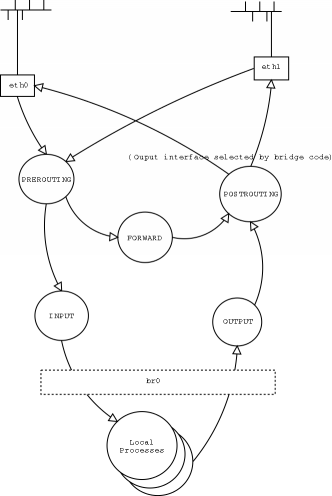
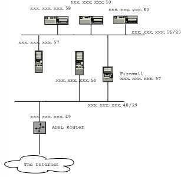

![[ Prev ]](../gx/navbar/prev.jpg)
![[ Table of Contents ]](../gx/navbar/toc.jpg)
![[ Front Page ]](../gx/navbar/frontpage.jpg)
![[ Talkback ]](../gx/navbar/talkback.jpg)
![[ FAQ ]](./../gx/navbar/faq.jpg)
![[ Next ]](../gx/navbar/next.jpg)

"Linux Gazette...making Linux just a little more fun!"
Implementing a Bridging Firewall
What is the difference between a bridging firewall and a conventional firewall?
Usually a firewall also acts as a router: systems on the inside are configured
to see the firewall as a gateway to the network outside, and routers outside
are configured to see the firewall as the gateway to the protected network. A
bridge is piece of equipment that connects two (or more) network segments
together and passes packets back and forth without the rest of the network
being aware of its existence. In other words, a router connects two networks
together and translates between them; a bridge is like a patch cable,
connecting two portions of one network together. A bridging firewall acts as a
bridge but also filters the packets it passes, while remaining unseen by either
side.
Why might you want to so such a thing? A couple of reasons spring to mind:
- You can plug in a firewall without changing any of your existing network software configuration.
- You may want to protect part of a network where you do not have control of the external routing into your network.
My Problem
In my office I had a shiny new ADSL connection from Demon Internet
with an assigned 16 address subnet (less base, broadcast and router IP
= 13 IP addresses). Because of the vagaries of the UK commercial and
regulatory environment, the line and router were installed and owned by
British Telecom plc. and there was no facility to configure the router
to use an internal gateway. This left me two choices:
- Connect every host directly to the ADSL router and set up iptables separately for each one.
- Use a firewall with ip masquerading to present a single ip address to the outside world.
The first was untenable. Multiplying the number of iptable configurations
multiplied the chances of error and the administration overhead.
The second had its own drawbacks. While most things can be set up to
work quite happily with IP masquerading, there are exceptions, including
some technologies that I wished to explore, such as VPNs. A bridging
firewall would solve this problem. The firewall could stand between the
ADSL router and the rest of the router and protect the network without
reconfiguring the router. The one remaining obstacle was that the bridging
code in the standard Linux kernel completely bypasses iptables, so you
can have a box which is either a bridge, or a firewall, but not both.
The Solution
Fortunately, there is a project
to implement bridging in conjunction with iptables, so that any packets
transmitted across the bridge can be subject to iptables rules. The
result is a firewall that can be totally transparent to the network,
requiring no special routing. As far as the Internet is concerned, the
firewall does not exist, except that certain connections are blocked. The
bridge software is a kernel patch to allow the existing bridge code to
work inside iptables. Conveniently, the developers have made available
a Redhat 7.2 kernel rpm with the patch installed. Less conveniently,
documentation on how to use it is minimal, so I thought to document this
implementation as an aid to anyone else following the same path.
Bridging and Routing - how it works
Briefly. the linux bridge implementation works by tying together two
or more network interfaces. By monitoring activity on all the attached
network segments the bridge code learns which MAC addresses are accessible
from each interface and uses this information to decide which packets to
send out on each interface. The interfaces attached to the bridge to not
normally have an IP address associated with them, but the entire bridge
is configured as a single interface to the firewall.

Network topology
My allocated static IP addresses are in the range xxx.xxx.xxx.48-63,
i.e. a subnet mask of 255.255.255.240. I decided to split this range
into two network segments,xx.xxx.xxx.48-56 would be used outside the
firewall, and this includes the IP address of the ADSL router itself
(xxx.xxx.xxx.49). xxx.xxx.xxx.57-62 would be the secure section behind
the firewall. Note that these are not truly subnets as they are linked
by a bridge rather than a router.

Firewall Rules
The sample firewall script
is broadly similar to a conventional firewall setup (cribbed from
Oskar Andreasson's iptables tutorial. The basic firewall policy is:
- Block packets from unlikely IP addresses
- Allow any outgoing connections from behind the firewall
- Allow packets in that belong to established connections
- Allow connections to specified ports and hosts from outside
Variable definitions
For clarity and maintainability it is a good idea to keep interface names
and IP addresses as variables. The values used for these examples are:
BR_IP="xxx.xxx.xxx.57"
BR_IFACE=br0
LAN_BCAST_ADDRESS="xxx.xxx.xxx.63"
INTERNAL_ADDRESS_RANGE="xxx.xxx.xxx.56/29"
INET_IFACE="eth1"
LAN_IFACE="eth0"
LO_IFACE="lo"
LO_IP="127.0.0.1"
"xxx.xxx.xxx" represents the first three bytes of the network IP
addresses. $INTERNAL_ADDRESS_RANGE is the secure network segment.
Setting up the bridge
We have to do a some less conventional things to set up the bridge. First
we shut down our two interfaces and remove any IP address from them.
ifdown $INET_IFACE
ifdown $LAN_IFACE
ifconfig $INET_IFACE 0.0.0.0
ifconfig $LAN_IFACE 0.0.0.0
If you just executed these commands from a telnet connection (or ssh
as you are so security conscious), get up and cross the room to your
firewall's console.
Next we create a bridge and assign the Ethernet interfaces to it.
brctl addbr $BR_IFACE
brctl addif $BR_IFACE $INET_IFACE
brctl addif $BR_IFACE $LAN_IFACE
You can now bring up the bridge as an internal interface if you wish:
ifconfig $BR_IFACE $BR_IP
Blocking spoofs
We can block spoofed packets in the mangle PREROUTING chain. By blocking
here we can catch both INPUT and FORWARDED packets at the same time. We
use mangle PREROUTING rather than nat PREROUTING because only the first
packet of each stream is checked in the nat table.
This line ensures that only packets with valid internal addresses are
accepted on the internal interface.
$IPTABLES -t mangle -A PREROUTING -i $LAN_IFACE -s $INTERNAL_ADDRESS_RANGE -j ACCEPT
And this prevents packets with internal addresses being accepted on the
external interface:
$IPTABLES -t mangle -A PREROUTING -i $INET_IFACE ! -s $INTERNAL_ADDRESS_RANGE -j ACCEPT
Accessing the firewall from the internal network
You may choose to leave your firewall completely invisible to the network,
or you may wish for convenience to allow connections from within.
These commands will allow all connections to the firewall from the
internal network only. You may wish to be more selective depending on
your level of trust of your network systems and users.
$IPTABLES -A INPUT -p ALL -i $BR_IFACE -s $INTERNAL_ADDRESS_RANGE -d $LAN_BCAST_ADDRESS -j ACCEPT
$IPTABLES -A INPUT -p ALL -i $BR_IFACE -s $INTERNAL_ADDRESS_RANGE -d $BR_IP -j ACCEPT
Remember that we have already eliminated packets that claim to be from
$INTERNAL_ADDRESS_RANGE that appear on the wrong interface.
More information
The kernel patch without which all your iptables rules are in vain.
Oskar Andreasson's iptables tutorial is recommended reading.
Try Rusty's Remarkably Unreliable Guides
for background on packet filtering and networking.
Sparkle Home Page
(the author's company)
Acknowledgments
Thanks to Lennert Buytenhek for a
really useful patch, and also for reviewing this article.
 David Whitmarsh
David Whitmarsh
David is an independent consultant working mostly for
financial institutions in the City of London through his company,
Sparkle Computer Co Ltd. With four young children,
spare time is a precious commodity, so the daily commute from Sussex is
his main opportunity for tinkering with Linux and open source software
on his laptop.
Copyright © 2002, David Whitmarsh.
Copying license http://www.linuxgazette.net/copying.html
Published in Issue 76 of Linux Gazette, March 2002